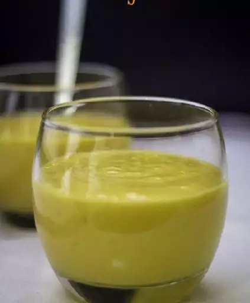

LASSI

Description
Learn what a lassi drink is with this basic recipe for the popular Indian beverage. You can adjust the amount of yogurt or water for a thicker or thinner consistency. Garnish with fresh mint if desired.
Ingredients
- 1 ½ cups mangos - peeled, seeded, chopped, and chilled
- 1 ½ cups plain yogurt
- ½ cup cold milk
- 2 tablespoons heavy cream
- 2 tablespoons confectioners' sugar
- ½ teaspoon ground cardamom